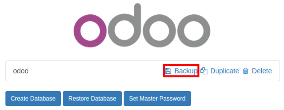
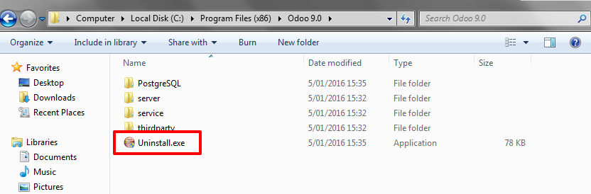
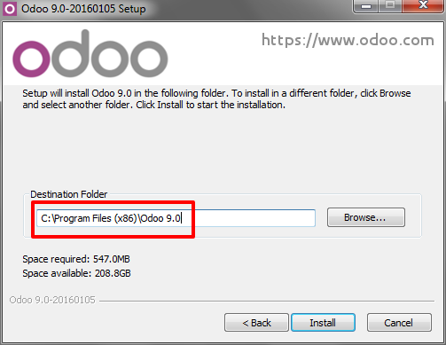

Depending on your current installation, there are multiple ways to upgrade your community version. In any case the basic guidelines are:
Backup your community database
- Shutdown your server
- Upgrade the web module
- Restart your server
- Enter your Odoo Enterprise Subscription code
On Linux, using an installer
- Backup your community database
Stop the odoo service
$ sudo service odoo stopInstall the enterprise .deb (it should install over the community package)
$ sudo dpkg -i <path_to_enterprise_deb>Update your database to the enterprise packages using
$ python /usr/bin/odoo.py -d <database_name> -u web --stop-after-init- You should be able to connect to your Odoo Enterprise instance using your usual mean of identification. You can then link your database with your Odoo Enterprise Subscription by entering the code you received by e-mail in the form input
On Linux, using the source code
There are many ways to launch your server when using sources, and you probably have your own favourite. You may need to adapt sections to your usual workflow.
- Shutdown your server
- Backup your community database
- Update the
--addons-pathparameter of your launch command (see Source Install) Update the web module by using
$ -d <database_name> -u web --stop-after-initDepending on the size of your database, this may take some time.
- Restart your server with the updated addons path of point 3. You should be able to connect to your instance. You can then link your database with your Odoo Enterprise Subscription by entering the code you received by e-mail in the form input
On Windows
- Backup your community database
Uninstall Odoo Community (using the Uninstall executable in the installation folder) - PostgreSQL will remain installed
Launch the Odoo Enterprise Installer and follow the steps normally. When choosing the installation path, you can set the folder of the Community installation (this folder still contains the PostgreSQL installation). Uncheck
Start Odooat the end of the installationUsing a command window, update your Odoo Database using this command (from the Odoo installation path, in the server subfolder)
$ odoo.exe -d <database_name> -u web --stop-after-init- No need to manually launch the server, the service is running. You should be able to connect to your Odoo Enterprise instance using your usual mean of identification. You can then link your database with your Odoo Enterprise Subscription by entering the code you received by e-mail in the form input